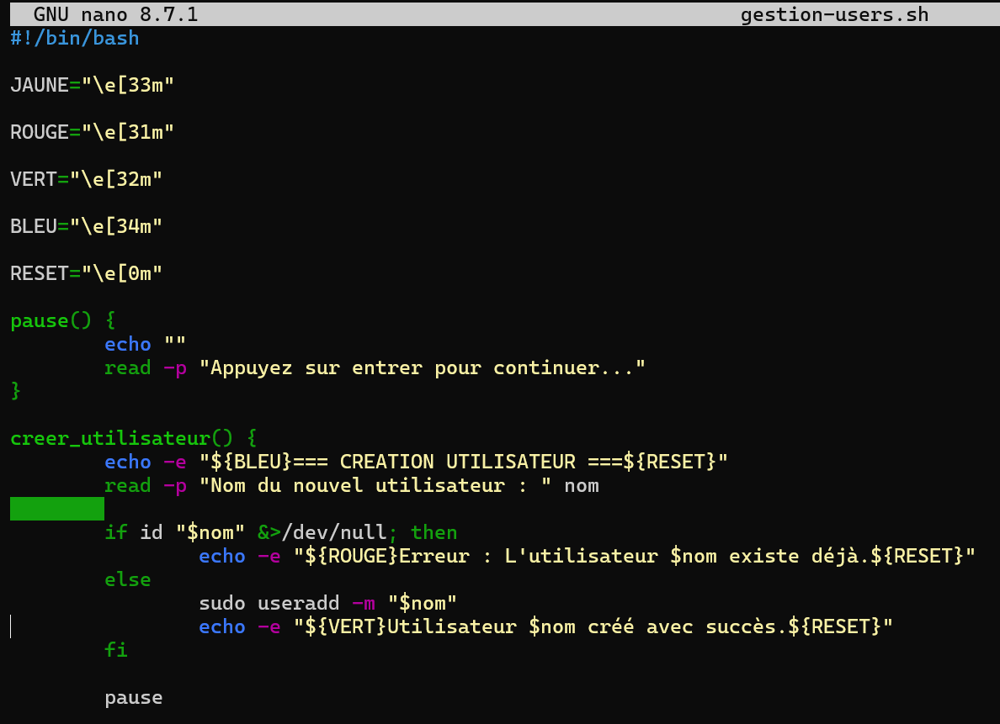

Gestionnaire d’utilisateurs Linux en Bash
Projet réalisé sous Linux Ubuntu consistant à développer un gestionnaire d’utilisateurs en ligne de commande avec Bash. L’objectif du projet était d’apprendre les bases de l’administration système Linux ainsi que le scripting Bash à travers la création d’un menu interactif permettant de créer, supprimer et lister des utilisateurs.
Objectifs du projet
🐧 Découverte Linux
Utilisation de l’environnement Ubuntu et des commandes Linux de base.
⌨️ Scripting Bash
Création d’un script Bash interactif avec des fonctions, des boucles et des conditions.
👤 Gestion utilisateurs
Mise en place de fonctionnalités de création, suppression et affichage d’utilisateurs Linux.
🎨 Interface terminal
Amélioration du rendu terminal avec des couleurs et une interface plus lisible.
Script Bash
Développement du gestionnaire utilisateurs avec Bash sous Ubuntu.

Exécution du programme
Test du menu interactif dans le terminal Linux Ubuntu.

Fonctionnalités développées
➕ Création utilisateur
Création automatique d’utilisateurs Linux via la commande useradd.
➖ Suppression utilisateur
Suppression des utilisateurs et de leurs répertoires personnels.
📋 Liste utilisateurs
Affichage des utilisateurs Linux présents sur le système.
⚠️ Gestion erreurs
Vérification de l’existence des utilisateurs et gestion des erreurs.
Compétences développées
Linux Ubuntu
Utilisation de l’environnement Linux et du terminal.
Bash scripting
Création de scripts interactifs avec des structures de contrôle.
Administration système
Gestion des utilisateurs et des permissions Linux.
Diagnostic terminal
Lecture et compréhension des messages système Linux.